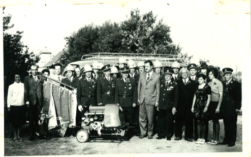
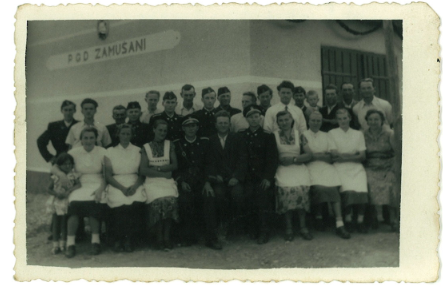
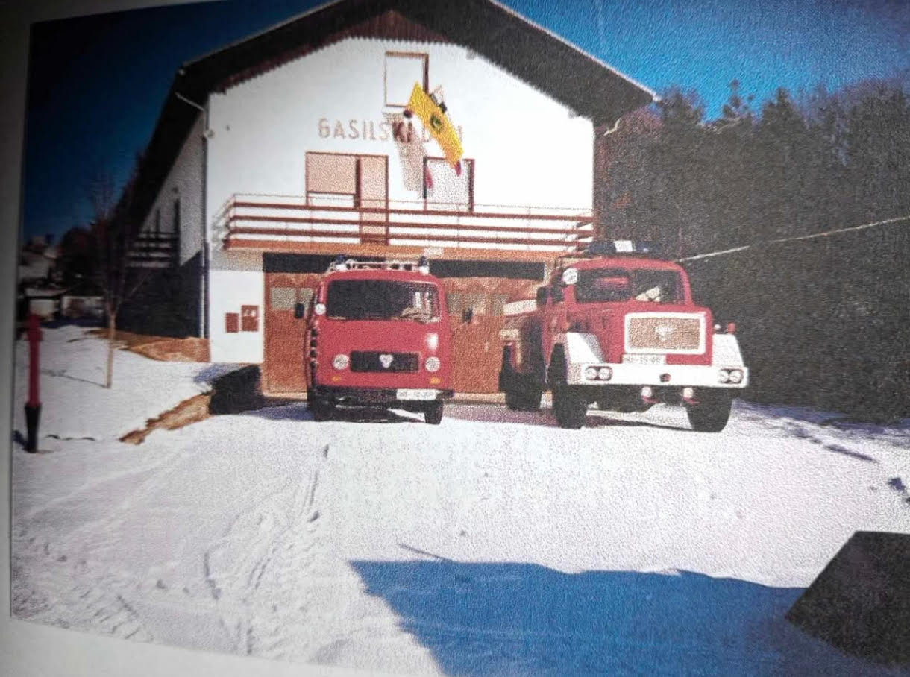

Prostovoljno gasilsko društvo Zamušani je bilo ustanovljeno leta 1952. Nastalo je iz potrebe po večji požarni varnosti v vasi Zamušani, ki se razteza od ravninskega dela ob reki Pesnici vse do višjih delov naselja.
Pobudo za ustanovitev društva je dal Janez Pintarič, ki je deloval v PGD Gorišnica. Prvotno je bila ustanovljena prostovoljna gasilska četa Zamušani, ki je delovala v okviru PGD Gorišnica, že leta 1953 pa je društvo postalo samostojno kot PGD Zamušani.
Od ustanovitve naprej društvo neprekinjeno raste, se razvija in posodablja. Skozi desetletja je gradilo gasilski dom, posodabljalo vozni park in opremo, hkrati pa skrbelo za vzgojo mladih, tekmovalni duh ter povezovanje krajanov.


